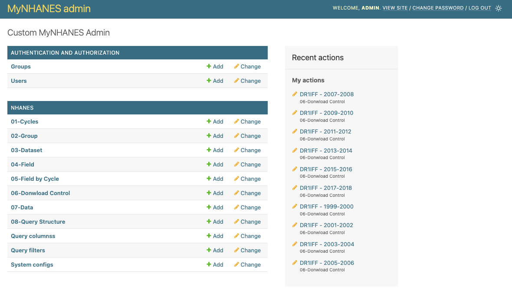
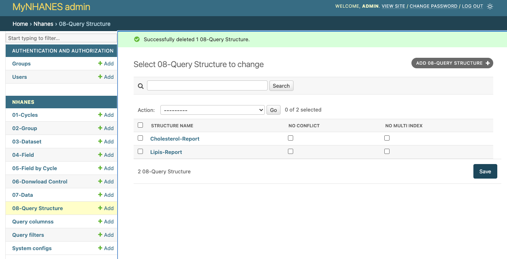
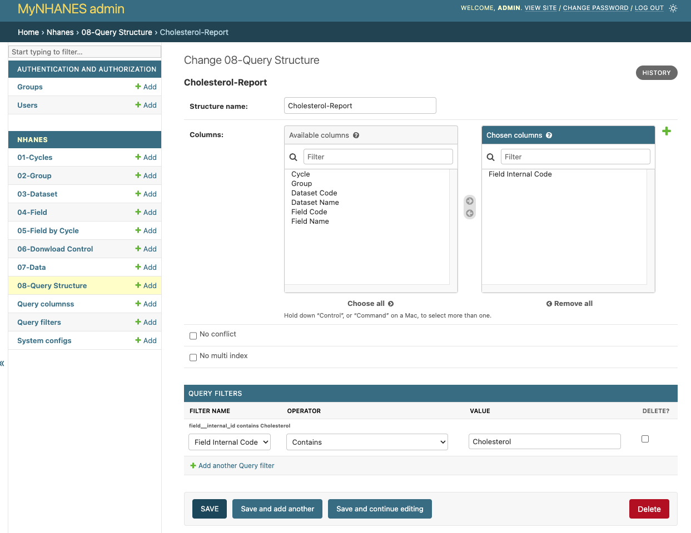
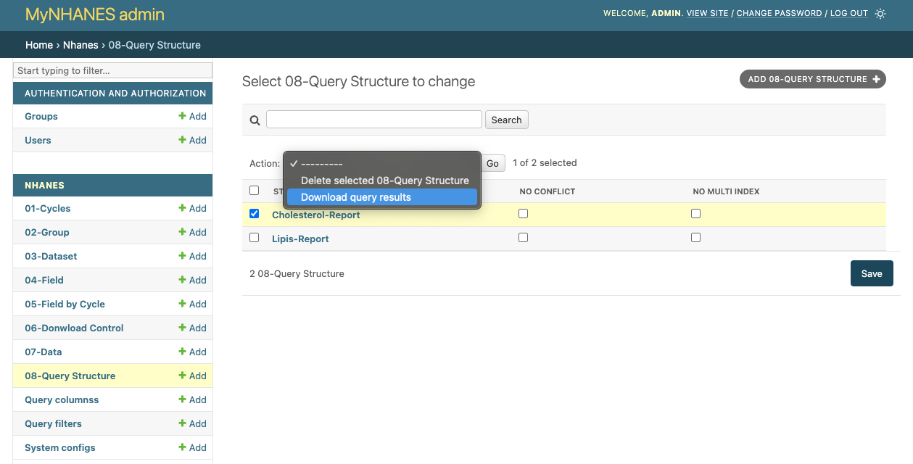
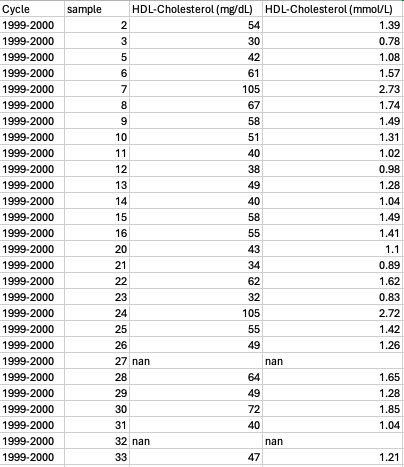

Usage
Starting the Application
After installing MyNHANES, you can start the application using the following command:
python manage.py runserver
This will initiate the Django server, making the application accessible via the specified port, typically at http://localhost:8000.
Data Management
Initial Data Setup:
When you execute the deployment with the local setting, the application sets up a new SQLite database filled with master data necessary for NHANES operations such as Cycles, Groups, and Datasets.
Loading NHANES Data:
The bulk of NHANES data needs to be loaded into the system to perform meaningful queries and analysis. Here’s how you manage this data:
Cycle Management: Manage different NHANES cycles like 1999-2000, 2001-2002 etc., through the Cycle table. This is crucial for segmenting the data loads according to specific time frames.
Group Management: NHANES data is categorized into different groups such as Demographics, Examination, Laboratory, and Questionnaire. The Group table allows you to manage these categorizations.
Dataset Management: Specific datasets like Demographic Data, Examination Data etc., are managed in the Dataset table. Each dataset corresponds to a particular group.
Field Management: Detailed data fields within each dataset are managed through the Field table. Fields are consistent across cycles but can be grouped differently in reports.
Download Control: This functionality manages the downloading and integration of NHANES data into the database. Each dataset by cycle will have its status managed here, where you can set datasets to be downloaded and integrated.
System Configuration: System configurations determine how datasets are processed and loaded. For example, auto_create_dataset_control setting in SystemConfig determines whether dataset controls should be automatically created for new datasets or cycles.
Data Table: The Data table stores all the loaded NHANES data, potentially becoming a very large table depending on the volume of loaded data.
Querying and Reporting
Query Structure Table:
The Query Structure table allows users to define custom queries and reports. Users can specify which fields (like cycle, dataset, group) to include in the output and apply various filters to refine the data.
   To generate reports, select the desired query structure and export the results to a CSV file by clicking the export button in the admin panel.
TO DO: - Add the options to donwloads (csv, db or both)